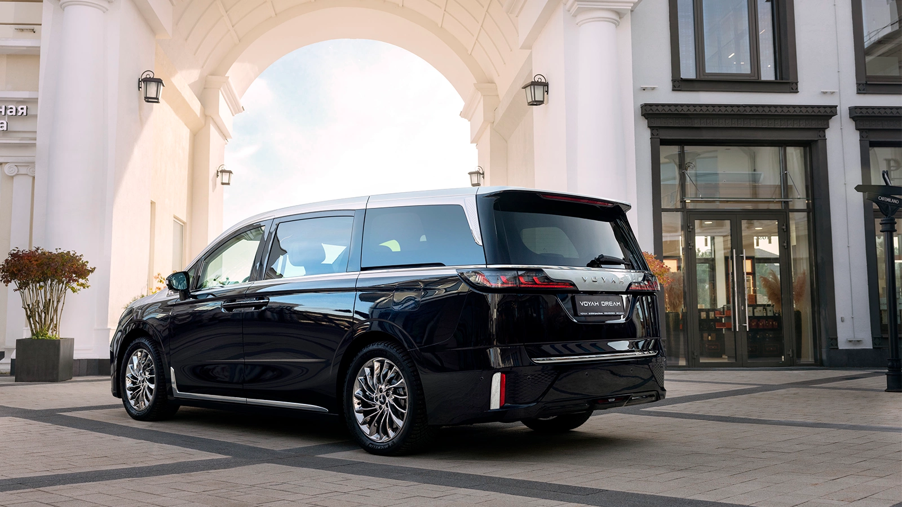
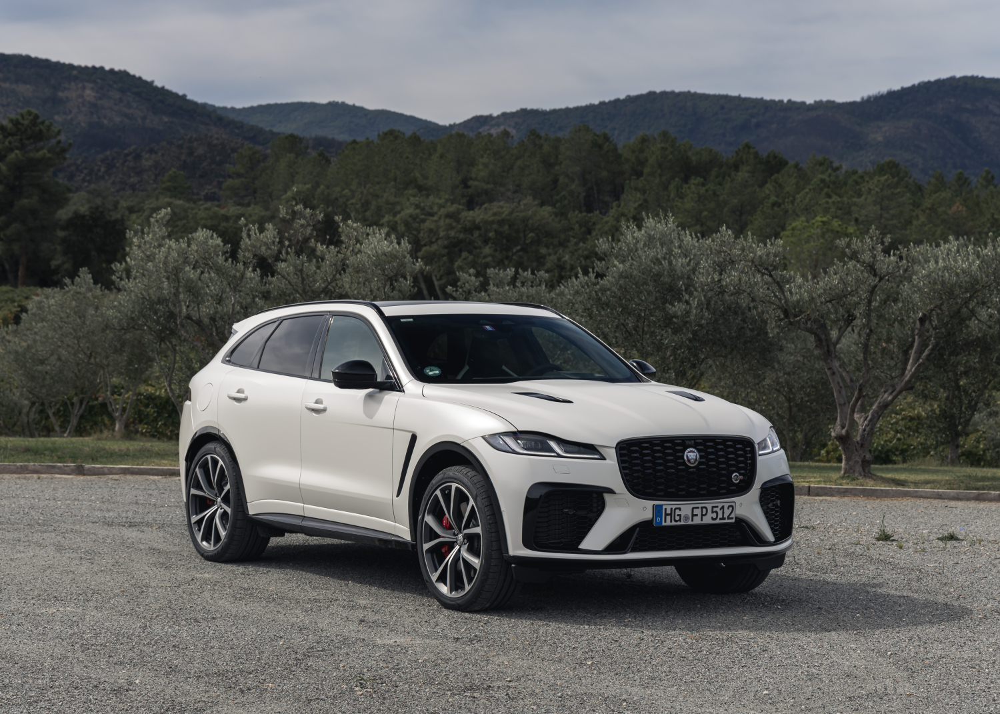
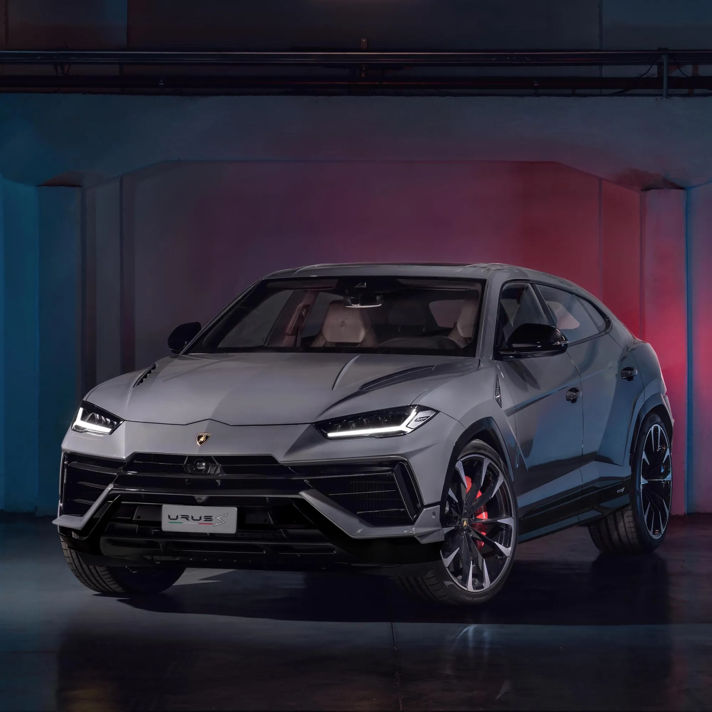
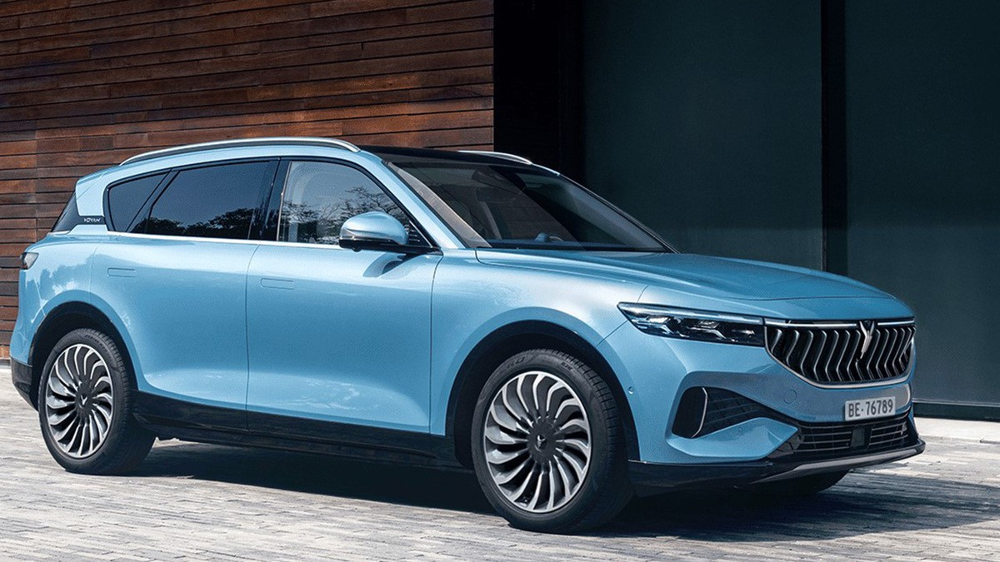
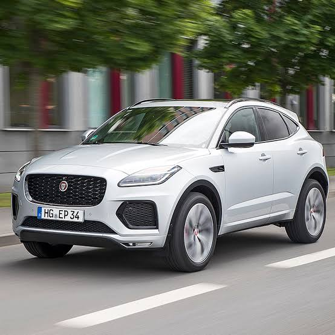

| 1. Самая дорогая модель |
 Lamborghini Revuelto
Lamborghini Revuelto
Флагманский суперкар с гибридной силовой установкой V12.
|

Voyah Dream First / Passion L
Премиальный гибридный минивэн / бизнес-седан высшего класса.
|

Jaguar F-Pace SVR
Заряженный спортивный кроссовер с двигателем V8.
|
| 2. Самая дешёвая модель |

Lamborghini Urus
Спортивный кроссовер, являющийся самым массовым и доступным в линейке бренда.
|

Voyah Free
Интеллектуальный электрический кроссовер / последовательный гибрид.
|

Jaguar E-Pace (базовая комплектация)
Престижный кроссовер с 2-литровым мотором.
|
| 3. Двигатель |
Бензиновый V8 / V12 (включая PHEV-гибриды)
Высокомощные двигатели внутреннего сгорания с турбонаддувом.
|
Гибридный (1.5 л турбо + электромоторы) / Электрический
Последовательный гибрид или чистая электротяга (EV).
|
Бензиновый и дизельный (серия Ingenium, V8 Supercharged)
Рядные 4-цилиндровые и V-образные двигатели.
|
| 4. Расход топлива |
~12.7 – 16.0 л / 100 км
В смешанном цикле (зависит от мощности и стиля вождения).
|
~1.5 – 8.0 л / 100 км
Низкий расход топлива благодаря гибридной силовой установке.
|
~5.3 – 11.4 л / 100 км
От экономичных дизелей до производительных бензиновых версий.
|
| 5. Скорость (Разгон 0-100 км/ч) |
2.5 – 3.3 секунды
Экстремальная динамика спорткаров.
|
4.8 – 5.9 секунды
Быстрый старт за счет мгновенного крутящего момента электромоторов.
|
3.8 – 8.7 секунды
Динамика от спортивных модификаций SVR до базовых версий.
|
| 6. Наличие экологических сертификатов |
Соответствие нормам Euro 6 / применение гибридных технологий снижения выбросов CO2
|
Высокий экологический класс (NEV / нулевой уровень выбросов в электрическом режиме)
|
Соответствие стандартам Euro 6 / технологии мягкого гибрида (MHEV)
|
| 7. Гарантийный срок |
3 года (официальная заводская гарантия)
|
5 лет или 100 000 км пробега (в зависимости от региона поставок)
|
3 года или 100 000 км пробега
|
| 8. Максимальная скорость |
305 – 350 км/ч
|
200 км/ч
|
217 – 286 км/ч
|
| 9. Тип трансмиссии |
Роботизированная (DCT) / Автоматическая
|
Автоматическая (электрический редуктор / DHT)
|
Автоматическая (гидротрансформатор ZF)
|
| 10. Количество передач |
7 или 8 передач
|
1 или 2 ступени (электрическая трансмиссия)
|
8 передач
|